Electronics Design
Assigments: Hello world board
- Group: Use the test equipment in your lab to observe the operation of a microcontroller circuit board
- Individual assignment: Redraw the echo hello-world board, add (at least) a button and LED (with current-limiting resistor), check the design rules, make it, test it.
Personal Assignment - Understanding the circuit
The "Hello World" circuit is based on a atTiny44 microcontroller which is programmed to print (echo) a given input in serial monitor. It have a 20MHz crystal, FTDI and SPI terminals for serial comm and a 10K resistor and capacitor for micro safety.
We need to add a button to the circuit which will turn on/off a LED. This button will be on one of the free I/O pins of the micro and the LED will be on other of the free I/O.
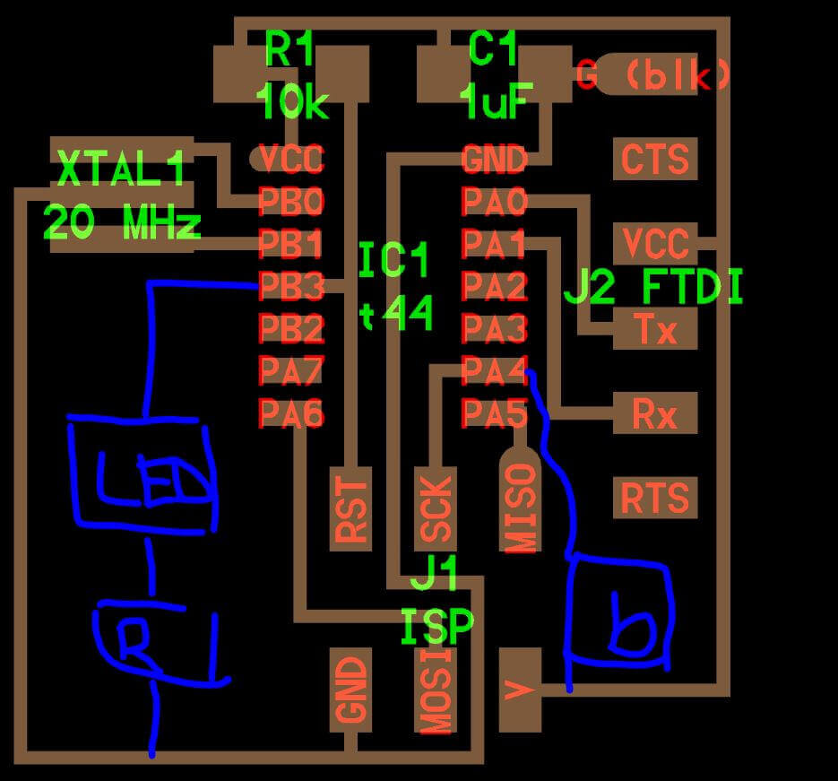
Simulation
Using the TinkerCAD electronics simulator (www.tinkercad.com), I'm going to try to reproduce the circuit. Due this is a very basic -but free- simulator it doesn't have all components, but do have all main components -name attiny45- which is all we need for this week.
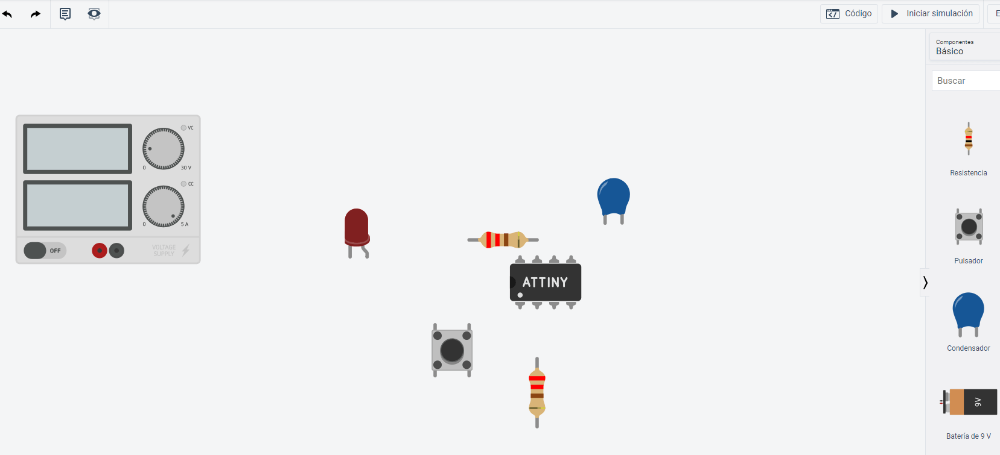
Components
Once logged in TinkerCAD, a new circuit needs to be created. Circuits layout allows to drag any component (from TinkerCAD library) to the development area. For this simulation I will be using: breadboard, attiny45 micro, resistor, capacitor, button and LED.
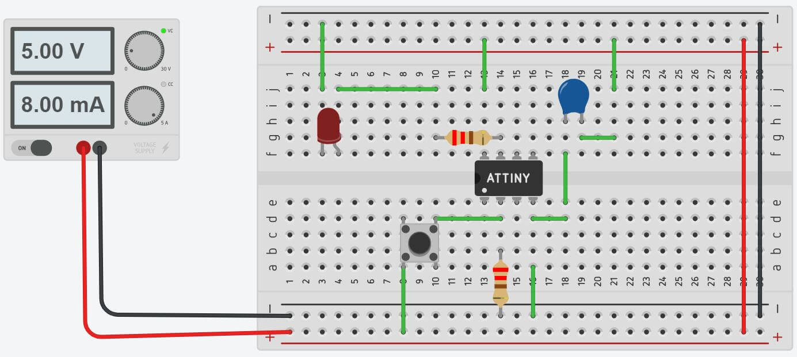
When all components are pseudo placed (I will be moving the components while make connections to better fit), click on one end to place a cable between 2 points. Repeat the steps with all connections needed and should look like the image.
Programming
The code enviroment is similar to the Arduino IDE, and allows to programm the AVR attiny micro with arduino language. With the code enviroment open, I added the code for a simple push button program. When the button is pushed, the light will be on.
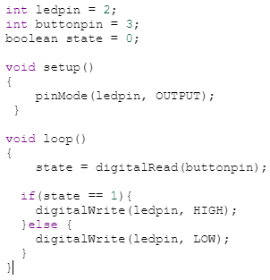
What's different using atTiny45 from the original atTiny44? None. Should work the same way. The only difference for this proyect is pin availability. atTiny44 have 6 more pins (14) than tiny45, but for this proyect its enough.
Design Software - Using Eagle
For the PCB design, I will be using Eagle, from Autodesk. For how to install and setup Eagle, I used sparkfun guide:How to install and setp Eagle . It's a very simple guide for programm installation, library setup (library I downloaded from here) and other settings.
Operation for Eagle is really easy, big steps are:
- Creating Proyect: This will be our "Project file".
- Creating schematics file: Where we connect our components.
- Adding components to the schematics.
- Creating PCB: This will arrange components and create routes.
- Fix errors, improvements and changes.
- Export: exporting png files for PCB milling.
All steps are described in these schematic and boards tutorials. I will be detailing all things specific for my assignment.
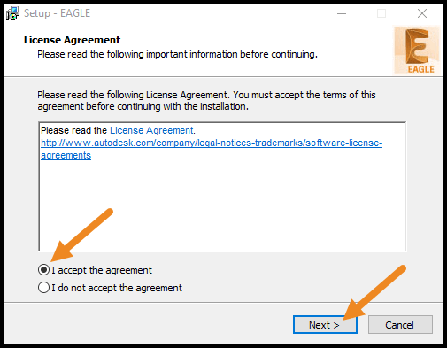
Re-draw board
The first big change I'm doing is replace attiny44 with a 45 unit. This because I'm not adding the 20M crystal and FTDI header(used for serial comm), releasing 4 pins in total (44 has 6 more I/O than 45). I have to add a LED and button, so the final component list is:
- Attiny45 unit
- 3x2 ISCP header
- 10k(2) and 200(1) ohm resistors
- Capacitor 100uF
- Button
- Surface mount LED
Added components to schematic file. Made a first try, but seems too ugly, so decided to take 3x2 header out amd connect with labels. It doesn't matter if it is connected this way, the programm identify when you are connect similar labels. Once all components are connected, we switch to board layout.
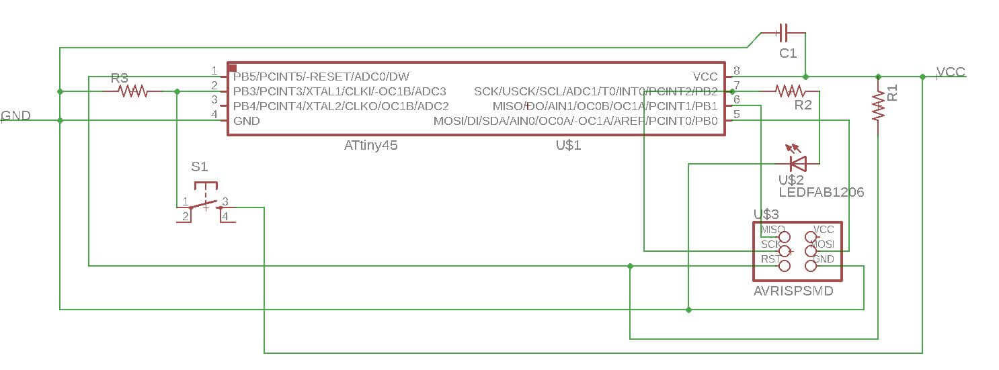
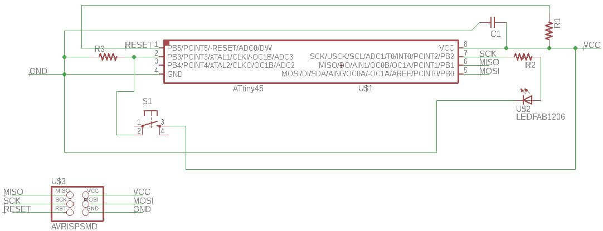
Here, every component appears packed. Using the move command, I re-arrenged the components trying to identify the final distribution. Once I have some idea where is the final place of each component, make board delimitation. Trying to make everything smaller is preffered, it reduce milling time and material, making everything cheaper.
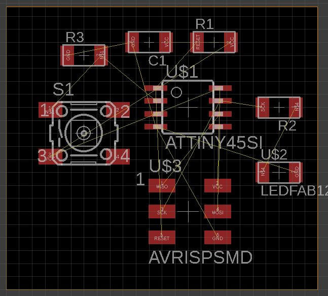
Using this first iteration, tried routing components. Eagle have it's own autorouting feature, but for this job wanted to do by myself.
Routing it's not one way task, most of the time you are making iteration to achieve the best results. If a connection is wrong or is missing, you have to go back to the schematics and fix it.
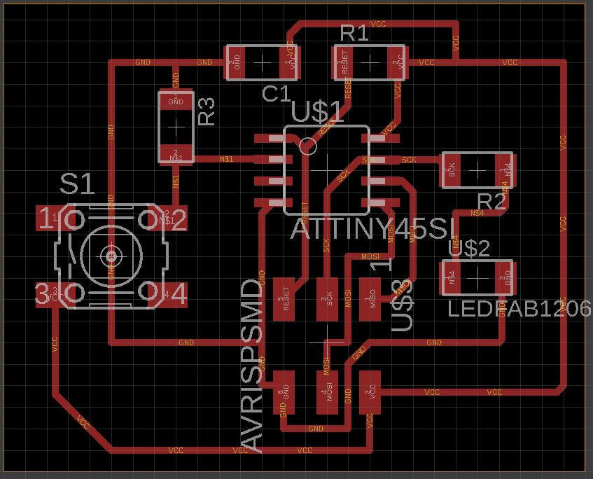
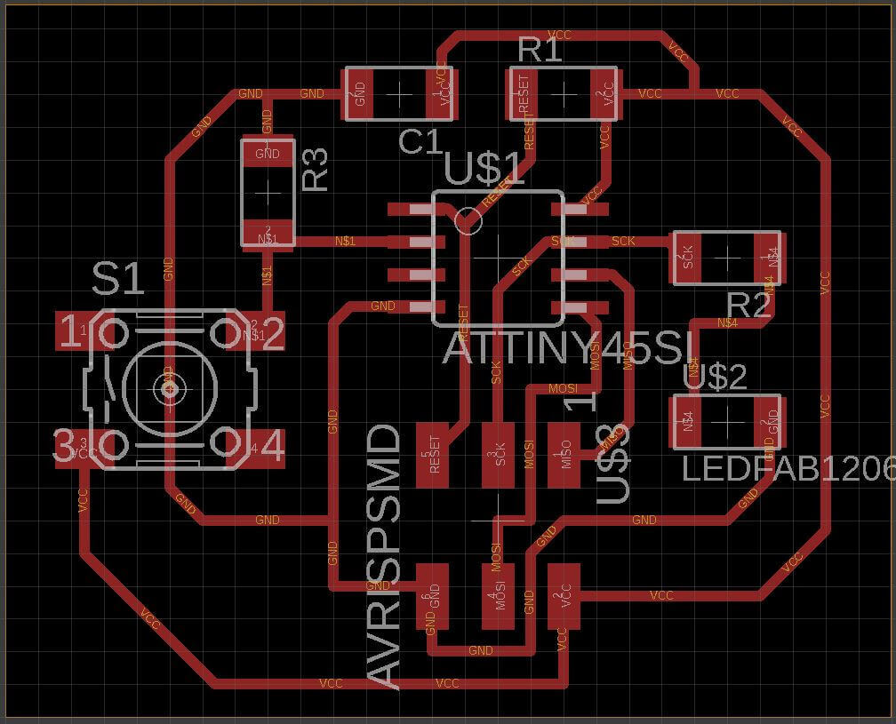
Finally when all routes are in place, its time to export to a PNG graphic. Here we have a Modela CNC with Fab Module. Export only the top layer without colors (Monochrome) and good resolution (1000 DPI aprox).
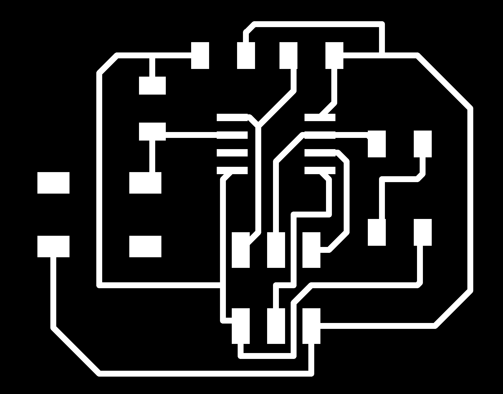
Milling and Soldering
Like week5 assignment, I will be using FabModules. To check how to set up the modela printer visit week 5.
After setting all parameters, first run will cut through the board 0.08" deep. This will be repeated 2-3 times depending how quality the job is. NOTE: This is only because we have a broken tool.
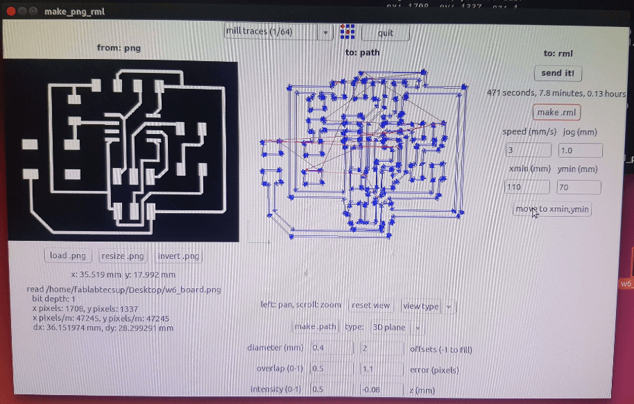
After 3 times, the board is ready, but need to be cut using the guillotine. Now the board is ready for soldering it's components.
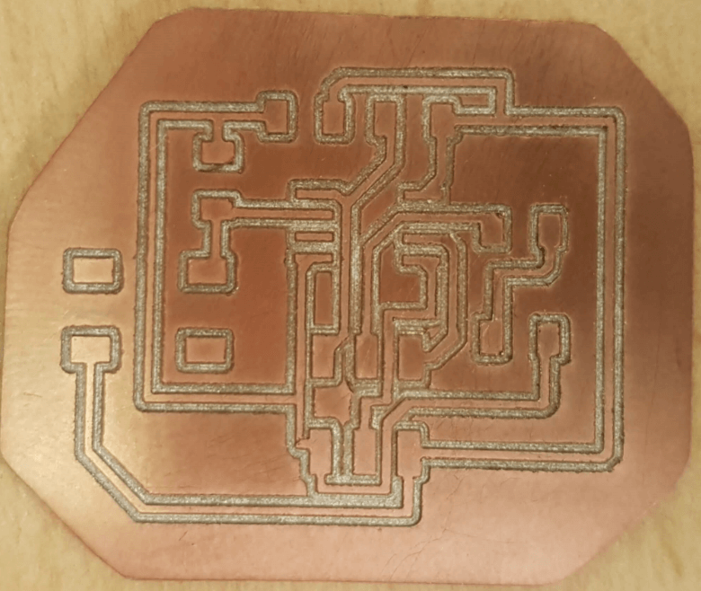
Voilá: this is how it looks after soldering it's componets.
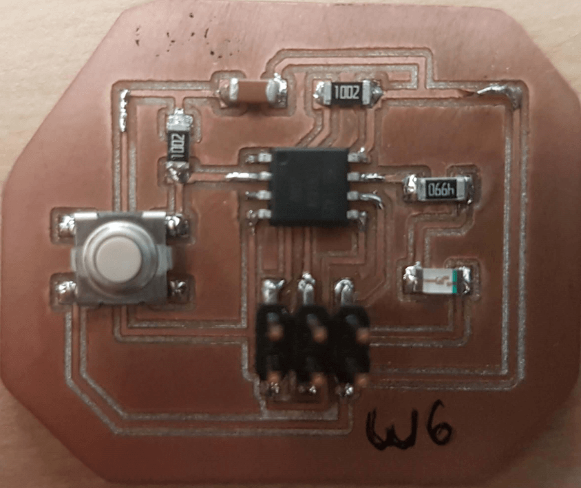
Using a digital multimeter, cheked the board is ok!
Programming and test
One thing I was noticed, is FabISP and AVRISP programmer do not supply 5v to the board, should be powered from outside! That was unexpected, since I removed FTDI connector. So decided to solder two cables to the board (Vcc and GND) to be powered.
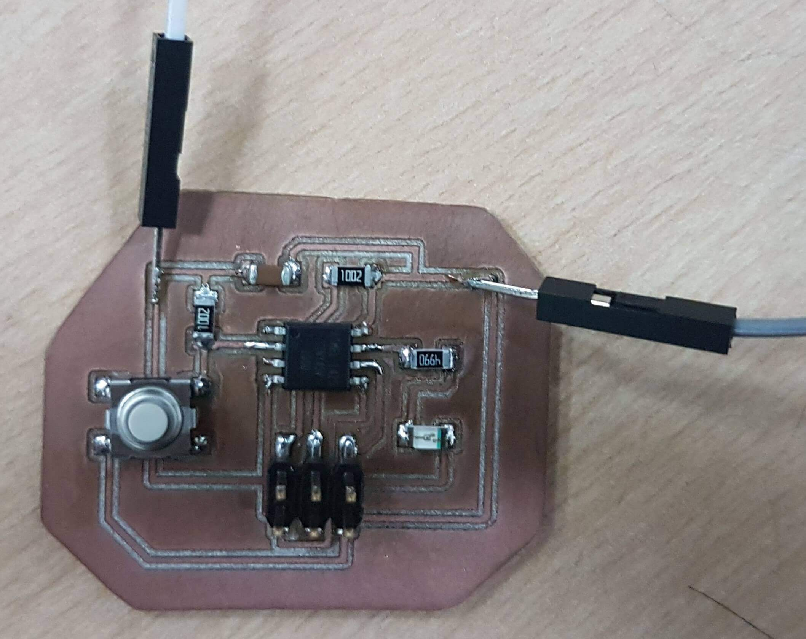
Before programming, a need change the input pin number in the new code. Simulation uses PB5 for button imput but the new board would be using PB3. Only making change on "buttonpin" variable will solve the problem.
For this assingment I used an Arduino One as an ISP programmer. This video shows how to setup your Arduino One as a programmer.
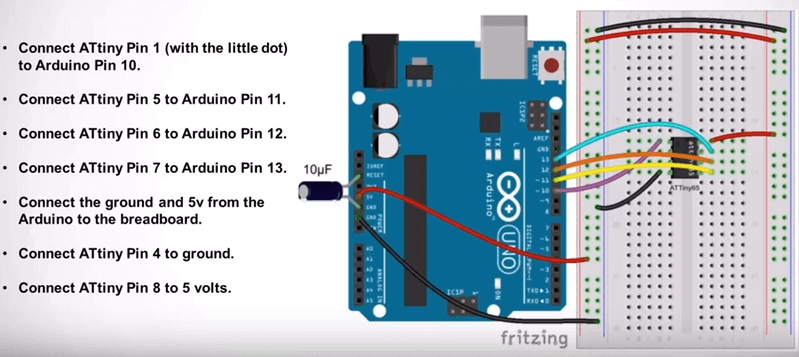
I connected everything as shown in the video, and one thing I learnt is the arduino can be an ISP and CAN supply 5v to the board, so my first "fix" was unnecesary.
Now I will copy the code from Tinkercad to Arduino IDE. For the Arduino to send info to the attiny, first we need to load the attiny library. Here is a tutorial how to add attiny library to Arduino IDE.
With everything connected, loaded the program from Tinkercad (files at the bottom) to Arduino IDE, and program show "Done uploading", a confirmation of success.
Disconected all but VCC and ground an test (LED should turn on when button press). Sucess!